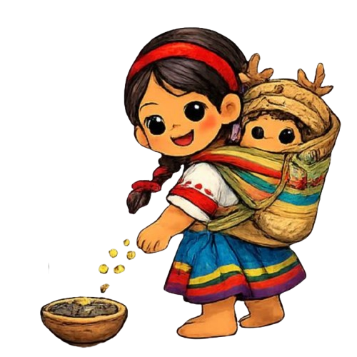

Acciones para protegerlos
Para proteger la lengua y cultura de los tepehuanes (radicados principalmente en Durango, Nayarit, Chihuahua y Zacatecas), es fundamental aplicar un enfoque integral que priorice la transmisión intergeneracional en el hogar, el impulso a una educación bilingüe y comunitaria, y el apoyo activo a sus artes, tradiciones y derechos lingüísticos